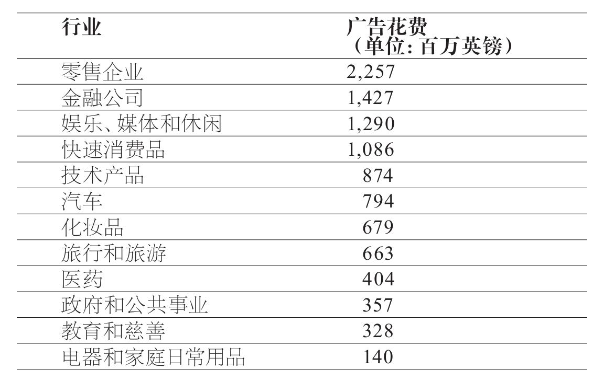
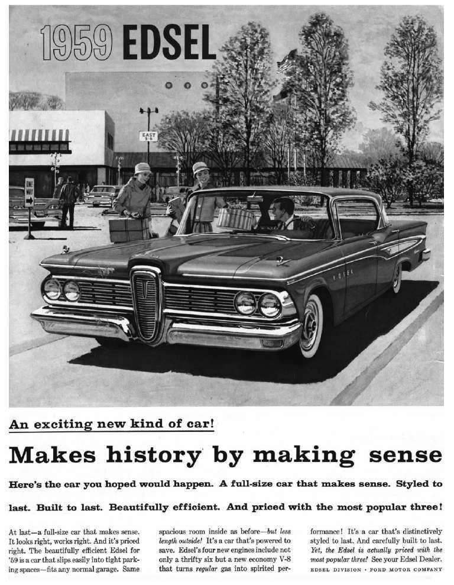
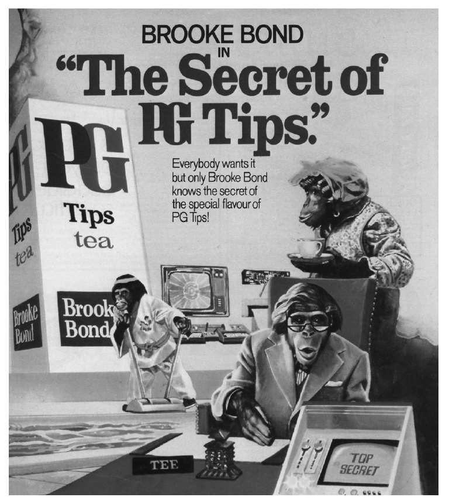
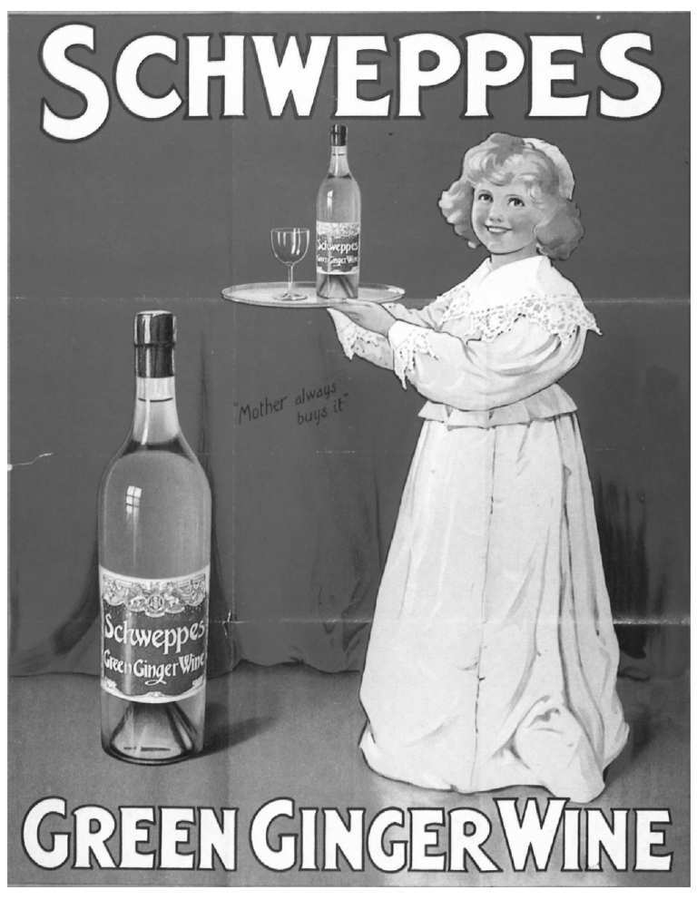

任何广告投放者所作出的第一个同时也是最重要的决定是……投放广告。许多人认为大公司别无选择，必须做广告。这显然是错误的。许多世界性的大公司，尤其是钢铁制造和造船等重工企业，从来不做广告，或者做得很少，可以忽略不计。它们通常不必与公众交流，因为它们的关键客户人数很少，因此可以直接接触他们。另外一些大型公司（最知名的例子莫过于谷歌）通过其他方式让公众记住它们的企业名称和业务，最常见的是通过“口碑”推荐的方式。现在这种方式也常被称为“病毒式营销”。当某个企业新近创立并且具有新闻价值的时候，病毒式营销往往最容易成功：2009年，甚至连谷歌公司也不得不使用传统媒体进行广告宣传。（同样，维京公司在早期基本没有进行广告宣传，但现在在广告方面花费巨大。）
其他企业不做广告宣传企业自身，因为没有必要，但它们会对产品进行宣传。电影公司和图书出版社就是很好的例子。除了个别例外情况，公众不知道也不关心某部特定的电影由哪家电影公司出品，或者某本特定的图书由哪家出版社出版：他们只想知道电影或图书的内容，以及相关的作者、明星和电影导演。
而且，大多数公众认为，或许你自己也这样认为，他们很少受到广告影响。因此，如果一些公司没做广告也能成功，并且大多数人认为他们不受广告影响，那么为什么广告投放者还要进行广告宣传呢？
做广告需要花钱，没有企业喜欢花钱，除非它不得不这样做。上述段落提到的企业知道它们不需要花钱用于广告宣传，所以它们就不做广告。那些做广告的企业占到全部企业的绝大多数，它们认为，进行广告宣传非常重要。它们认为（事实上，它们确信）从广告中获得的利益超过成本，通常利润非常可观。那么，哪些企业会做广告？第33页列举了英国广告花费最高的12个行业。
虽然各国之间存在差异，这份列表在各个经济发达国家几乎一致，原因也是一样。这些行业的目标市场相当巨大，它们相信广告是沟通目标市场的最具实效的方式。尽管广告成本不菲，它们依然认为广告是游说目标市场购买产品的最廉价方式。这些信念看起来很乐观，它们的基础是什么？
如果你读过许多关于广告行为的资料，你很可能见过下面这条格言：
在英国，这条格言的首创者通常被认为是莱弗尔姆勋爵一世，他是联合利华公司的创始人；在美国，首创者被认为是伟大的零售商萨姆·沃纳梅克。

事实上，没有证据表明两人曾说过这句话。或许这句话只是将1916年阿道夫·S.科赫说过的话变化了一番，科赫是当时《纽约时报》的出版商。这句格言听起来很高深，耐人寻味，这也解释了为何它能流传近一个世纪。但事实上，你稍加思索就会发现，这句话毫无意义。它意味着什么？电视广告的前半部分有效，而后半部分无效？不同的广告就这样交替出现有效/无效/有效/无效……？每块户外大型广告牌的左半边有效，而右半边无效？这个说法经不起推敲。但是，这句格言的确暗示了广告行为的一个关键方面，人们对这个方面知之甚少。
让我们回到“金钥匙”的概念，所谓“金钥匙”就是使某些广告行为成功而另一些（缺少关键的“金钥匙”）失败的关键。或者正如格言所说：有些广告行为纯属浪费人力财力，而另一些广告行为则物有所值。潜在的假设是，广告行为是一个包括两部分的游戏：成功的广告行为和失败的广告行为。这一观点广为流传，并非只有公众持有这一看法。那些在广告业工作的人（无论他们为广告投放者、媒体还是为广告代理工作）几乎普遍接受这一看法。但这一说法实在是太简单了。广告行为并不是包括两个部分的游戏：广告行为是彩虹，或者至少是棱镜光谱。
这样来想吧。你想卖掉一辆旧自行车。于是你成了广告投放者，在互联网上或者在当地报纸的分类广告栏发布了一条广告。你可能从潜在的购买者那里得到了一份报价，或者两份，十份，甚至多于二十份，或者也可能是这之间的任何数字。当然，你也可能没有购买者，在这种情况下你可以说，广告绝对失败了，虽然也有可能失败的并不是广告本身。许多人可能对广告感兴趣，但他们却不喜欢广告中提及的自行车的若干细节：颜色、把手或者其他部分。不管哪种情况，只要有人购买，就说明广告取得了一定的成功，成功等级从最低（1）到最高（20+）。不过，很少有商业广告投放者只发布唯一的一条广告。它们发动广告宣传攻势，推出许多条广告。不可避免地，有些广告引起反响，尽管反响可能很小。即使是那些在广告业历史上众人皆知的惨败宣传，比如英国的斯特兰牌香烟广告和美国福特汽车公司推出的埃德塞尔车型广告，也还是卖出了一些香烟和汽车。因此，广告行为的结果并不是非黑即白，不能用成功/失败，或者浪费/没有浪费来简单区分。广告行为的结果是一个范围。
而且，对于广告投放者来说，关键问题不仅仅是广告行为是否带来任何销售。关键问题是：销售水平是否远远高于宣传活动的成本，从而能带来利润？因为这才是广告投放者进行广告宣传的原因：追求利润。
但是，这同样是一个不好回答的问题，因为广告行为所带来的是两种销售（广告投放者也总是希望这样），即当前销售和长期销售。广告投放者希望能很快挣回它们花费在广告宣传活动上的资金，而且还能建设长期的品牌。广告投放者不仅希望得到属于它们的蛋糕，还要吃掉它。因此，这就是广告投放者为什么要投放广告的最终答案：迅速实现利润（不同的广告投放者实现利润的速度各不相同），并且在未来能继续赢利。要想实现这些目标并不简单，更不用说对此进行测量。

图7 广告业历史上最为知名的宣传惨败之一
最近几十年里，随着商业领域内的金融分析技术变得更为复杂，对于广告投放者来说，财务责任变得更为重要。为广告投放者工作的顶尖的财务总监在各自的公司变得日渐强势；而且，在20世纪70年代，一个新名词“成本实效性”开始走红。主要广告投放者的财务总监希望公司的广告开支能够做到具有成本实效性，能在公司的资产负债表上体现出利润。
针对广告投放者的需求，到了20世纪70年代晚期，英国的一部分顶尖广告代理研究人员和企划人员在西蒙·布罗德本特的带领下，意识到广告代理机构必须立即应对挑战，证明它们的广告行为能够做到具有成本实效性。布罗德本特以优等成绩毕业于牛津大学，后在伦敦大学获得博士学位，毕业后一直在芝加哥工作。他知道美国的广告行为评估相比英国取得了更多进展。1961年，美国的全国广告投放者协会（是广告投放者，而不是广告代理机构）出版了一份影响深远的小册子，名为《界定用于测量广告行为结果的广告目标》（简称DAGMAR 方法）。DAGMAR 方法现在依然定期更新和再版，它清楚地界定了测量广告行为实效性的步骤，强调提前规定测量标准和拟采用的评估手段非常重要。时至今日，这些准则依然有效。DAGMAR 出版后不久，美国市场营销协会于1969年起开始评选艾菲奖。艾菲奖的设立是为了表彰那些证明了自身成本实效性的广告宣传活动。
从美国回到英国，布罗德本特当然对DAGMAR 方法和艾菲奖知之甚详。他认为，英国需要一个属于自己的广告实效性奖项。布罗德本特天生是个学术型的商业顾问，而不是擅长与文字和图像打交道的广告人，因此他希望新奖项的规定比艾菲奖更加严格。并且他希望由广告代理机构，而不是广告投放者来运营该奖项。1980年，他说服英国广告代理机构的行业组织英国广告从业者协会推出了广告从业者协会广告实效奖。
广告从业者协会广告实效奖的得主必须展示广告宣传活动的具体销售结果，如有必要可以进行加密。参加评选的资料必须披露销售结果是如何进行了确切测量，并且执行了哪些市场调查操作来验证这些结果。（我们将在第七章对此做进一步探讨。）入选的广告代理都必须得到广告投放者的确认，后者将证实资料的准确性。评委既包括知名学术和商业人士，也包括市场调查人员和主要的广告代理机构人员。用布罗德本特的话来说，广告的创造性在评选过程中不起作用。事实上，令人惊讶的是，奖项的参赛资料中并不包括广告。
广告从业者协会奖项有四个目标：（1）说服那些怀疑者和反对者，让他们相信广告行为是有效的、可测量的；（2）说服广告投放者（尤其是它们的财务负责人），让它们明白广告代理会认真对待它们的销售和赢利状况，而不是（如人们时常怀疑的那样）沉溺于追求创造性；（3）说服广告代理，让它们明白制作具有成本实效性的广告有助于维护它们的名声；（4）鼓励宣传企划和评估中的最佳实践。在随后的30年时间里，这四大目标均已胜利完成。
从1980年起，已有超过1，000份广告宣传案例参加了广告从业者协会奖项的评选。总体上，它们建立了一个丰富的数据库，适用于不同的品牌和市场，从大到小，从全国性到地方性，从普通消费者到业内专家都能使用。获胜的以及获得推荐的400份广告宣传的资料可以从世界广告行为研究中心网站上的广告从业者协会数据库得到，网址是http://www.warc.com ，同时也可以购买纸质出版物。这些资料构成了世界上最大、最全面，也是最为权威的成功广告案例合集。广告从业者协会奖项并不能证明，所有的 广告行为都具有成本实效性。我们之前已经看到，这不是真的，也不可能实现。但这些奖项有力地证明，精心策划的广告行为可以做到（并且通常都能做到）低成本高实效。
最后，广告从业者协会奖项的参选作品资料也表明，广告行为不仅有效，而且形式多样。本书第5-6页上列出的广告投放者的各种广告宣传目标就来自广告从业者协会奖项的参选作品资料；广告宣传活动平均约有2.5个目标，这一统计数据也来源于此。尽管广告从业者协会奖项的本意不在于此，但它们也说明了为什么我们找不到制作成功广告的“金钥匙”。这些奖项表明，虽然很少有人承认他们受到广告影响，但事实的确如此，不管他们本人是否喜欢这一点。
虽然广告从业者协会奖项非常棒，但起初它们存在着一个严重缺陷。在头十年，入围的参赛资料都把重点放在短期的销售结果上，努力展示各自的广告行为在过去的几年时间内表现得多么优秀。但我们之前已经看到，广告投放者通常不仅要求短期结果，还想要长期结果。广告投放者想要，事实上它们也需要，广告宣传活动不仅带来直接销售，而且能够建设长期品牌。
发现这一问题的依然是西蒙·布罗德本特博士。1988年9月，他发表了一篇极具影响力的文章，在其中他这样写道：“广告从业者协会奖项应该引入一个关于长期……广告行为结果的新类别。”两年后，在1990年，一项新的广告从业者协会奖项创立。第一个获奖广告是PGTips 牌茶叶。获奖的资料名为《PGTips35年来一直屹立于茶叶市场的巅峰》，它记录了PG公司推出的以猩猩为主角的茶叶广告。这些广告宣传通常很滑稽，并且长期播出，在广告中，黑猩猩们被赋予人类的个性和声音，欢乐地畅饮着它们手中的PG牌茶饮料。从那时起，其他成功的长期广告宣传活动也成为了广告从业者协会奖项的一部分。
对于广告投放者来说，长期销售主要体现在品牌 建设上。品牌最早出现于维多利亚时期，当时的许多品牌在两百多年后依然存在，这毫无疑问正是一种成功的长期销售！保惠尔牌牛肉汁、吉百利牌食品、科尔曼牌户外装备、克罗斯与布莱克威尔牌食品、李派林牌食品、奥克斯欧牌食品调味品、罗恩特里牌糖果、施威普斯牌饮料、《泰晤士报》、莱特斯牌肥皂，这些都是有着两百多年历史的英国老品牌。这些品牌中，有许多从一开始就认识到进行广告宣传的重要性，早在19世纪90年代，许多品牌已经开始雇用广告代理机构。
在那十年里，皮尔斯牌肥皂每年花费10万英镑进行广告宣传，而就在十几年前的1875年，该公司的年度预算仅仅只有80英镑。作为家族企业的主席，弗朗西斯·皮尔斯宣布辞职，因为他极度担心如此巨大的广告开支将导致公司破产。事实上，当时的广告宣传建立了最知名的早期肥皂品牌之一。
那么，什么是品牌？品牌和品牌推广起初是制造商所采取的一种方法，用于帮助客户辨识并购买它们的产品，因为在过去假货盛行、质量不一的年代，它们的产品普遍质量可靠。但现在的品牌概念远比当初更为复杂。如今，品牌的定义就像世界上的品牌数量一样数不胜数。但是，所有定义都认同一点，那就是一个品牌，或者说一个成功的品牌，必须符合下列四条标准：

图8 猩猩们帮助PGTips品牌在35年的时间里一直占据英国茶叶市场的领导地位

图9 一些顶尖品牌有着两百多年的历史
品牌不需要比其他竞争对手更贵：如今，零售商的自有品牌通常更为便宜，但在它们的购买者看来却具有极大价值，这就是它们的优势所在。品牌不需要在品质上优于竞争对手：就质量而言，受欢迎的家用型汽车无法与保时捷和宾利相比，但在家用汽车的购买者看来，这些车同样具有价值，这就是它们的优势所在。
很显然，价值的概念内在于品牌概念。因为价值就像美貌一样，取决于观察者的主观判断。起到关键作用的是该品牌的现有客户和未来客户（它的目标市场）所看重的品质。这些品质与实验室里的技术人员所看重的品质并不一定相同；它们与专家和权威所强调的品质也不一定相同。真正作出选择的是目标市场人群，他们选择哪些品质重要，哪些品质他们愿意花钱购买。他们的选择决定受到产品（或服务）使用感受的影响，同时也受到广告和其他市场营销策略的影响；另外，各种媒体曝光和个人推荐也产生了一定作用。如果这些品质合在一起，带给该品牌显著且积极的声誉（即显著且积极的品牌形象，参见第12页），那么该品牌注定将大获成功。品牌的精髓在于客户感受、声誉和形象。这些因素是人们购买（或不购买）该品牌的原因。更重要的是，这些因素也是人们持续地购买（或不购买）该品牌的原因。
如果一个品牌的声誉和形象足够显著，那么它可能做到几十年（甚至如我们所看到的那样，几百年）的持续成功。但要做到这一切，品牌所有者必须持续对品牌进行养护，确保它能够不断地、稳定地向目标市场人群提供良好价值。在如今我们所生活的快速多变、竞争激烈的世界里，要想做到这一点不能靠偶然机遇。它需要持之不懈的努力、精心的管理，以及连续不断的品牌发展和改进。但所有这一切努力都有回报。品牌是公司取得长期成功的基石。品牌确保广告宣传所获得的利润能够持续：广告宣传活动几乎立即就能实现利润，并且带来未来的收益，这正是广告投放者在建设健康的长期品牌时所需要做到的。
关于品牌推广，再说最后一点。如今，品牌的重要性不言而喻，因此大多数广告从业人员，无论是否在代理机构工作，说起品牌来似乎整个广告行为就是宣传品牌，不仅追求短期结果，也看重长期结果。这样的说法虽然大致符合实际情况，但并非总是如此。让我们再来想想旧自行车广告的例子（本书第34页）。一旦自行车卖出去，广告的任务也就完成了。同样，相当数量的直接反应类广告通过平面媒体或电视媒体所传递的讯息当场完成销售，并不进行品牌宣传。客户对于广告作出反应，不同的客户感兴趣的广告不尽相同。进行此类广告宣传的公司如果精于业务的话，会将操作进行到底，不断提供新的报价。但它们也许不会或者不想建立品牌。它们没有必要这么做。
这是另一个鲜活的例子，说明广告行为是多么不同和多样化。但是，在广袤的广告天空中，像这样不进行品牌宣传的广告投放者仅仅占到微不足道的一小部分。品牌才是群星和银河，它们在整个广告天空中闪烁着各自的光芒。